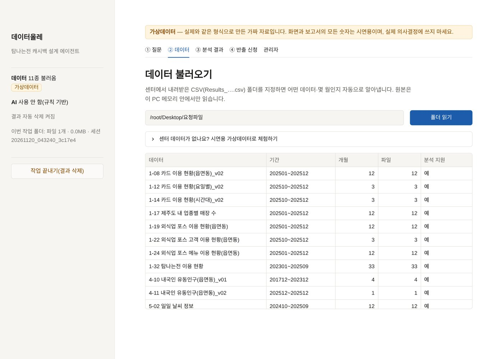

데이터올레
탐나는전 캐시백 설계 AI Agent — "예산 400억이면 몇 %로 해야 연말까지 안 끊기고, 전통시장 몫이 늘까?"
제주 지역화폐 '탐나는전'의 캐시백 적립률은 해마다 '감'으로 정해지고, 해마다 예산이 일찍 바닥나 적립이 끊깁니다. 데이터올레는 센터에 보관된 결제 데이터로 적립률을 올렸을 때 사용이 실제로 얼마나 느는지를 추정하고, 같은 예산으로 다섯 가지 배분안을 비교해 보고서와 실행 문서까지 만듭니다.
왜 웹 데모가 없나
센터 원본 자료는 밖으로 가져올 수 없고, 분석 PC는 외부 접속이 막혀 있습니다. 그래서 이 도구는 처음부터 인터넷 없이 로컬에서만 돌도록 만들었습니다. 숫자 계산은 전부 그 PC의 DuckDB가 하고, AI에는 질문의 수치를
[수치]로 가려서 보냅니다. AI 키가 없어도 규칙 기반으로 모든 기능이 똑같이 동작합니다.
직접 돌려 보려면
제출한 ZIP을 풀고 두 번만 누르면 됩니다. 센터 CSV가 없어도 됩니다.
설치.bat— 파이썬 환경과 라이브러리를 깔아 둡니다.실행.bat— 브라우저가 열립니다.- 첫 화면의 "가상데이터로 바로 체험하기" — 실제와 같은 형식의 가짜 자료를 만듭니다(처음 한 번 1~2분).
- 예시 질문 "예산 400억 원 배분"을 누르고 "에이전트에게 맡기기".
소스: github.com/yeono1220/jeju-data
1. 처음 켠 화면

2. 불러온 자료

3. 질문 하나에 대한 답
추천하는 배분안
C안 동네 살리기 집중형
예산을 기간 끝까지 유지하면서 원도심·전통시장·살리기 대상 동네의 몫을 가장 많이 늘립니다
예산이 버티는 기간
12개월 끝까지
지금 방식(A안) 6.6개월 — 7월 20일 소진
전통시장에 가는 몫
20.6%
지금 방식(A안) 7.6%

4. 같은 예산 400억 원의 다섯 가지 배분

5. 반출 신청까지

만든 것
- 질문 해석 → 데이터 선택 → 분석 → 보고서·실행물까지 하는 에이전트 (AI 없이도 규칙 기반으로 동작)
- 적립률 반응도 추정 — 앞당긴 소비 분리, 신뢰구간, 백테스트
- 같은 예산 배분 시뮬레이터와 역진성 지표
- 반출 검수 — 10 미만 비공개와 역산 방지를 코드로
- 센터 CSV 형식 11종·33개월치를 만드는 가상데이터 생성기
- 자동 테스트 108개